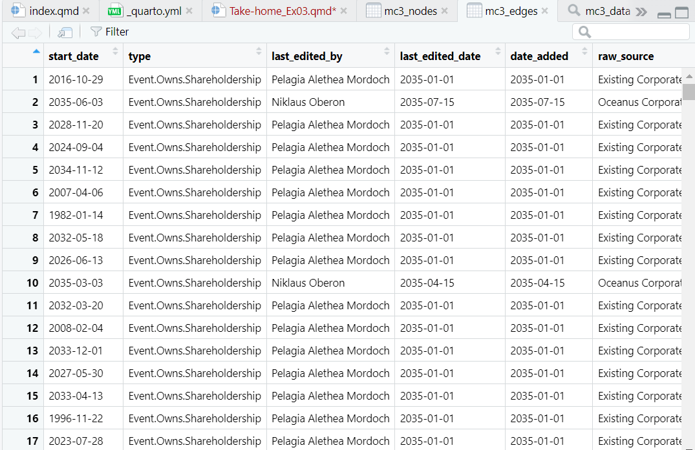
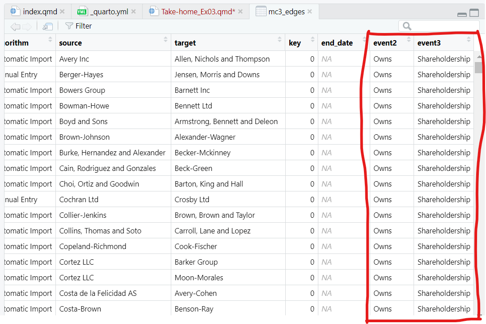
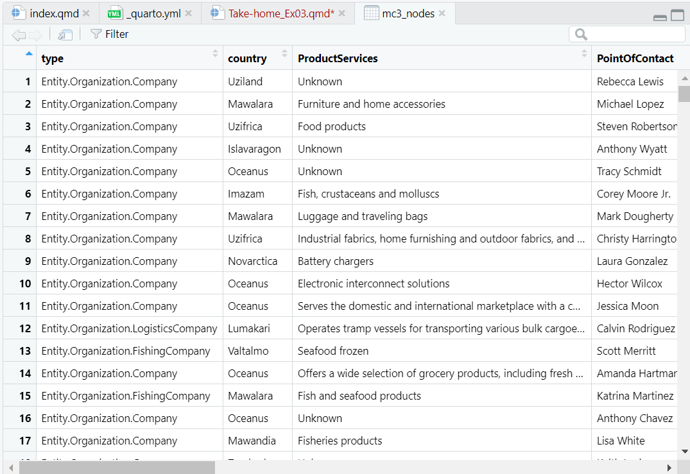
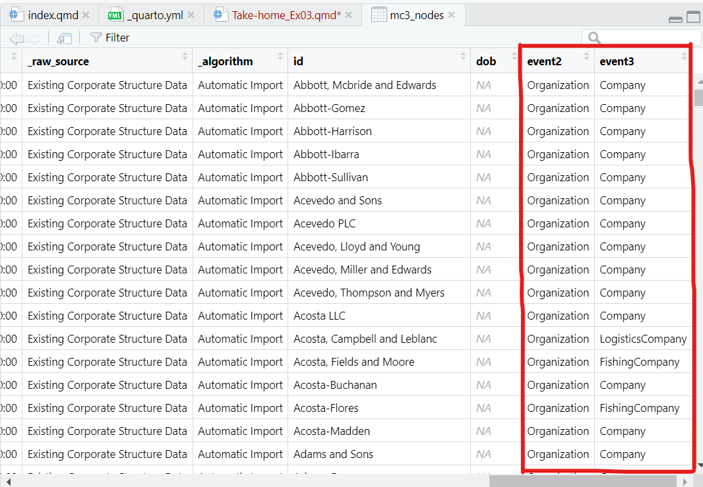

pacman::p_load(jsonlite, tidygraph, ggraph,
visNetwork, graphlayouts, ggforce,
skimr, tidytext, tidyverse)Take-home Exercise 3
Getting Started
Importing Graph Data
In the code chunk below, fromJSON() of jsonlite package is used to import MC3.json into R environment.
mc3_data <- fromJSON("data/mc3_cleaned.json")class(mc3_data)[1] "list"mc3 data is a directed multigraph with nodes and links. As shown by the output of the code chunk above, they are stored as lists instead of vector columns.
Wrangling and tidying edges
Extracting edges
The code chunk below will be used to extract the links data frame of mc3_data and save it as a tibble data frame called mc3_edges.
mc3_edges <- as_tibble(mc3_data$links) %>%
distinct()Next, glimpse() of dplyr will be used to reveal the structure of mc3_edges tibble data frame:
glimpse(mc3_edges)Rows: 75,817
Columns: 11
$ start_date <chr> "2016-10-29T00:00:00", "2035-06-03T00:00:00", "202…
$ type <chr> "Event.Owns.Shareholdership", "Event.Owns.Sharehol…
$ `_last_edited_by` <chr> "Pelagia Alethea Mordoch", "Niklaus Oberon", "Pela…
$ `_last_edited_date` <chr> "2035-01-01T00:00:00", "2035-07-15T00:00:00", "203…
$ `_date_added` <chr> "2035-01-01T00:00:00", "2035-07-15T00:00:00", "203…
$ `_raw_source` <chr> "Existing Corporate Structure Data", "Oceanus Corp…
$ `_algorithm` <chr> "Automatic Import", "Manual Entry", "Automatic Imp…
$ source <chr> "Avery Inc", "Berger-Hayes", "Bowers Group", "Bowm…
$ target <chr> "Allen, Nichols and Thompson", "Jensen, Morris and…
$ key <int> 0, 0, 0, 0, 0, 0, 0, 0, 0, 0, 0, 0, 0, 0, 0, 0, 0,…
$ end_date <chr> NA, NA, NA, NA, NA, NA, NA, NA, NA, NA, NA, NA, NA…
Note
From the table above, the following data issues can be identified:
start_date,_last_edited_date,_date_added,andend_dateshould be in date data type. Currently they are in character data type.Some field names start with “_”, they need to be renamed in order to avoid unnecessary coding issue in the later tasks.
Correcting date data type in mc3_edges
In the code chunk below, as_datetime() of lubridate package is used to convert fields with character date into POSIXt format.
mc3_edges$start_date <- as_datetime(mc3_edges$start_date)
mc3_edges$`_last_edited_date`<- as_datetime(mc3_edges$`_last_edited_date`)
mc3_edges$`_date_added`<- as_datetime(mc3_edges$`_date_added`)
mc3_edges$end_date <- as_datetime(mc3_edges$end_date)Next, glimpse() will be used to confirm if the process have been performed correctly.
glimpse(mc3_edges)Rows: 75,817
Columns: 11
$ start_date <dttm> 2016-10-29, 2035-06-03, 2028-11-20, 2024-09-04, 2…
$ type <chr> "Event.Owns.Shareholdership", "Event.Owns.Sharehol…
$ `_last_edited_by` <chr> "Pelagia Alethea Mordoch", "Niklaus Oberon", "Pela…
$ `_last_edited_date` <dttm> 2035-01-01, 2035-07-15, 2035-01-01, 2035-01-01, 2…
$ `_date_added` <dttm> 2035-01-01, 2035-07-15, 2035-01-01, 2035-01-01, 2…
$ `_raw_source` <chr> "Existing Corporate Structure Data", "Oceanus Corp…
$ `_algorithm` <chr> "Automatic Import", "Manual Entry", "Automatic Imp…
$ source <chr> "Avery Inc", "Berger-Hayes", "Bowers Group", "Bowm…
$ target <chr> "Allen, Nichols and Thompson", "Jensen, Morris and…
$ key <int> 0, 0, 0, 0, 0, 0, 0, 0, 0, 0, 0, 0, 0, 0, 0, 0, 0,…
$ end_date <dttm> NA, NA, NA, NA, NA, NA, NA, NA, NA, NA, NA, NA, N…Changing field names in mc3_edges
In the code chunk below, rename() of dplyr package is used to change the following fields.
mc3_edges <- mc3_edges %>%
rename("last_edited_by" = "_last_edited_by",
"last_edited_date" = "_last_edited_date",
"date_added" = "_date_added",
"raw_source" = "_raw_source",
"algorithm" = "_algorithm")Splitting words in mc3_edges
From the screenshot below, we can see that the text in type field are not in a tidy manner:

We are going to tidy up the type column by creating two columns as shown below:

- First, we find the maximum number of elements in any split:
word_list <- strsplit(mc3_edges$type, "\\.")
max_elements <- max(lengths(word_list))- Then, we pad shorter splits with NA values to make them all the same length:
word_list_padded <- lapply(word_list,
function(x) c(x, rep(NA, max_elements - length(x))))word_df <- do.call(rbind, word_list_padded)
colnames(word_df) <- paste0("event", 1:max_elements)- Since the output above is a matrix, we convert word_df into a tibble data.frame:
word_df <- as_tibble(word_df) %>%
select(event2, event3)
class(word_df)[1] "tbl_df" "tbl" "data.frame"- Finally, we append the extracted columns back to mc3_edges tibble data frame:
mc3_edges <- mc3_edges %>%
cbind(word_df)We save the mc3_edges into R rds file format for future use:
write_rds(mc3_edges, "data/rds/mc3_edges.rds")Wrangling and tidying nodes
Extracting nodes
The code chunk below will be used to extract the nodes data.frame of mc3_data and parses it as a tibble data.frame called mc3_nodes.
mc3_nodes <- as_tibble(mc3_data$nodes) %>%
distinct()Next, the code chunk below is used to reveal the data structure of mc3_nodes tibble data.frame.
glimpse(mc3_nodes)Rows: 60,520
Columns: 15
$ type <chr> "Entity.Organization.Company", "Entity.Organizatio…
$ country <chr> "Uziland", "Mawalara", "Uzifrica", "Islavaragon", …
$ ProductServices <chr> "Unknown", "Furniture and home accessories", "Food…
$ PointOfContact <chr> "Rebecca Lewis", "Michael Lopez", "Steven Robertso…
$ HeadOfOrg <chr> "Émilie-Susan Benoit", "Honoré Lemoine", "Jules La…
$ founding_date <chr> "1954-04-24T00:00:00", "2009-06-12T00:00:00", "202…
$ revenue <dbl> 5994.73, 71766.67, 0.00, 0.00, 4746.67, 46566.67, …
$ TradeDescription <chr> "Unknown", "Abbott-Gomez is a leading manufacturer…
$ `_last_edited_by` <chr> "Pelagia Alethea Mordoch", "Pelagia Alethea Mordoc…
$ `_last_edited_date` <chr> "2035-01-01T00:00:00", "2035-01-01T00:00:00", "203…
$ `_date_added` <chr> "2035-01-01T00:00:00", "2035-01-01T00:00:00", "203…
$ `_raw_source` <chr> "Existing Corporate Structure Data", "Existing Cor…
$ `_algorithm` <chr> "Automatic Import", "Automatic Import", "Automatic…
$ id <chr> "Abbott, Mcbride and Edwards", "Abbott-Gomez", "Ab…
$ dob <chr> NA, NA, NA, NA, NA, NA, NA, NA, NA, NA, NA, NA, NA…
Note
From the above output:
founding_date,_last_edited_date,_date_added,dobshould be in the date data type, currently it’s character data type.Some field names start with “_”, they need to be renamed in order to avoid unnecessary coding issue in the later tasks.
Correcting date data type in mc3_nodes
In the code chunk below, as_datetime() of lubridate package is used to convert fields with character date into POSIXt format.
mc3_nodes$founding_date <- as_datetime(mc3_nodes$founding_date)
mc3_nodes$`_last_edited_date`<- as_datetime(mc3_nodes$`_last_edited_date`)
mc3_nodes$`_date_added`<- as_datetime(mc3_nodes$`_date_added`)
mc3_nodes$dob <- as_datetime(mc3_nodes$dob)Next, glimpse() will be used to confirm if the process have been performed correctly.
glimpse(mc3_nodes)Rows: 60,520
Columns: 15
$ type <chr> "Entity.Organization.Company", "Entity.Organizatio…
$ country <chr> "Uziland", "Mawalara", "Uzifrica", "Islavaragon", …
$ ProductServices <chr> "Unknown", "Furniture and home accessories", "Food…
$ PointOfContact <chr> "Rebecca Lewis", "Michael Lopez", "Steven Robertso…
$ HeadOfOrg <chr> "Émilie-Susan Benoit", "Honoré Lemoine", "Jules La…
$ founding_date <dttm> 1954-04-24, 2009-06-12, 2029-12-15, 1972-02-16, 1…
$ revenue <dbl> 5994.73, 71766.67, 0.00, 0.00, 4746.67, 46566.67, …
$ TradeDescription <chr> "Unknown", "Abbott-Gomez is a leading manufacturer…
$ `_last_edited_by` <chr> "Pelagia Alethea Mordoch", "Pelagia Alethea Mordoc…
$ `_last_edited_date` <dttm> 2035-01-01, 2035-01-01, 2035-01-01, 2035-01-01, 2…
$ `_date_added` <dttm> 2035-01-01, 2035-01-01, 2035-01-01, 2035-01-01, 2…
$ `_raw_source` <chr> "Existing Corporate Structure Data", "Existing Cor…
$ `_algorithm` <chr> "Automatic Import", "Automatic Import", "Automatic…
$ id <chr> "Abbott, Mcbride and Edwards", "Abbott-Gomez", "Ab…
$ dob <dttm> NA, NA, NA, NA, NA, NA, NA, NA, NA, NA, NA, NA, N…Changing field names in mc3_nodes
In the code chunk below, rename() of dplyr package is used to change the following fields.
mc3_nodes<- mc3_nodes %>%
rename("last_edited_by" = "_last_edited_by",
"last_edited_date" = "_last_edited_date",
"date_added" = "_date_added",
"raw_source" = "_raw_source",
"algorithm" = "_algorithm")Splitting words in mc3_nodes
Similarly, we can see that the text in type column are not in a tidy manner:

We are going to tidy up the type column by creating two columns as shown below:

- First, we find the maximum number of elements in any split:
word_list <- strsplit(mc3_nodes$type, "\\.")
max_elements <- max(lengths(word_list))- Then, we pad shorter splits with NA values to make them all the same length:
word_list_padded <- lapply(word_list,
function(x) c(x, rep(NA, max_elements - length(x))))word_df <- do.call(rbind, word_list_padded)
colnames(word_df) <- paste0("event", 1:max_elements)- Since the output above is a matrix, we convert word_df into a tibble data.frame:
word_df <- as_tibble(word_df) %>%
select(event2, event3)
class(word_df)[1] "tbl_df" "tbl" "data.frame"- Finally, we append the extracted columns back to mc3_nodes tibble data frame:
mc3_nodes <- mc3_nodes %>%
cbind(word_df)We save the mc3_nodes into R rds file format for future use:
write_rds(mc3_nodes, "data/rds/mc3_nodes.rds")To read these files in future:
mc3_edges <- read_rds("data/rds/mc3_edges.rds")
mc3_nodes <- read_rds("data/rds/mc3_nodes.rds")Data Visualisations
Task 2
We are going to attempt Task 2:
| Using your visualizations, find and display examples of typical and atypical business transactions (e.g., mergers, acquisitions, etc.). Can you infer the motivations behind changes in their activity? |
Ideas for question 2:
filter out companies (Company, FinancialCompany, FishingCompany, LogisticsCompany, NewsCompany)
Task 3
Next, we are going to attempt Task 3:
| Develop a visual approach to examine inferences. Infer how the influence of a company changes through time. Can you infer ownership or influence that a network may have? |